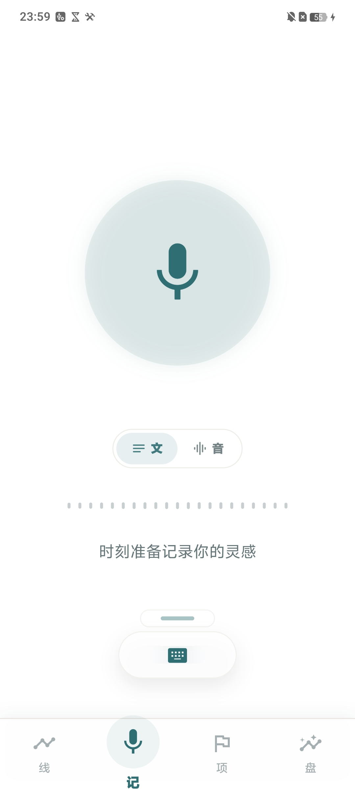
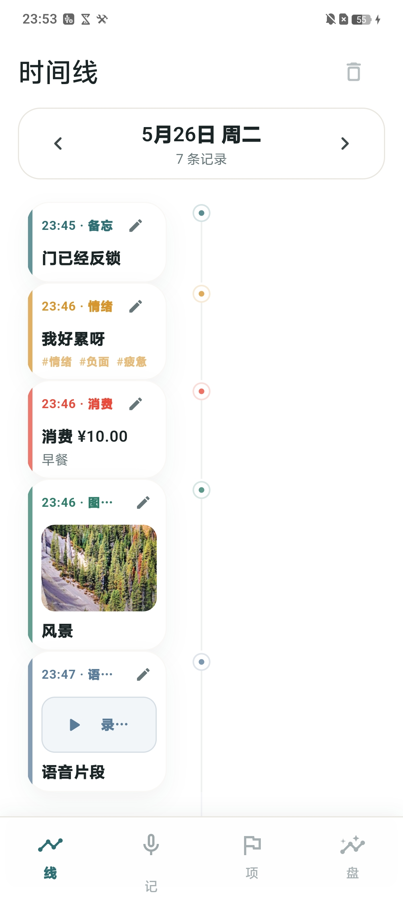
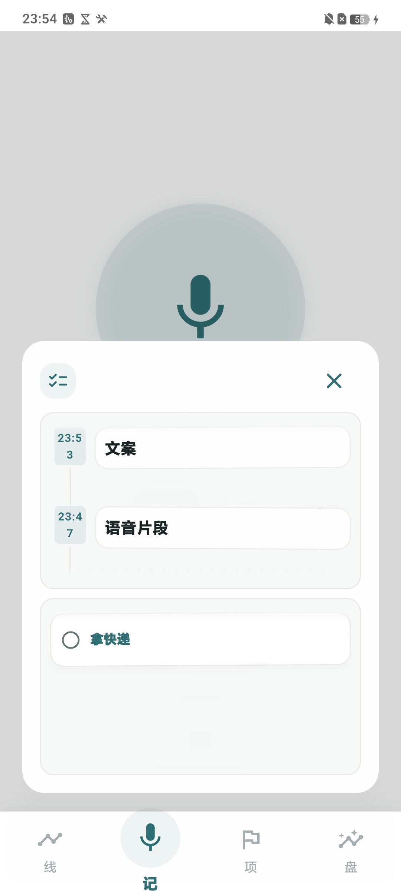
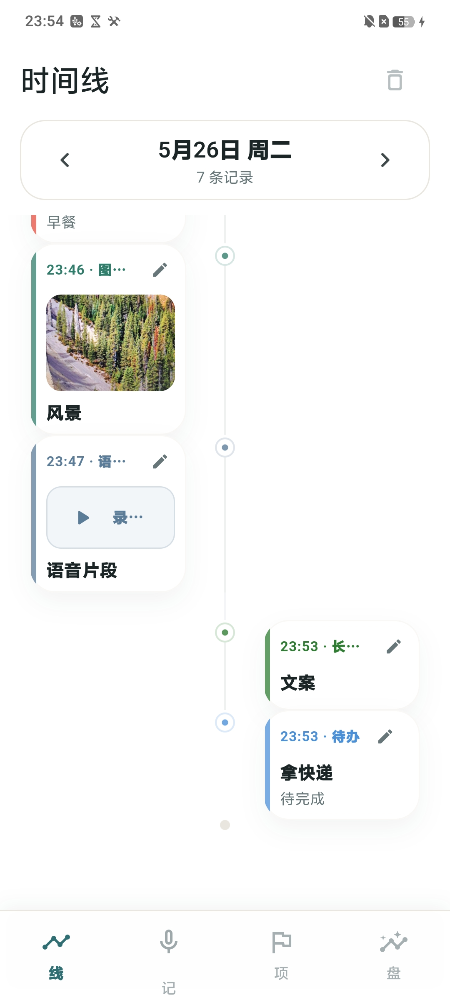
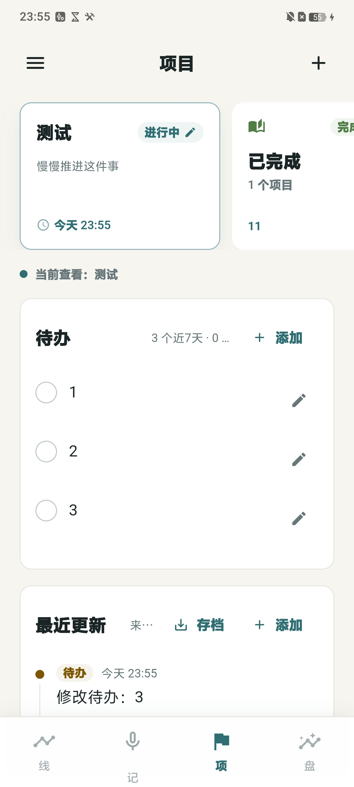
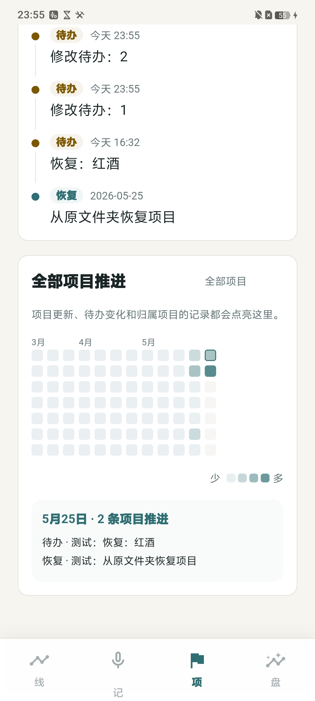
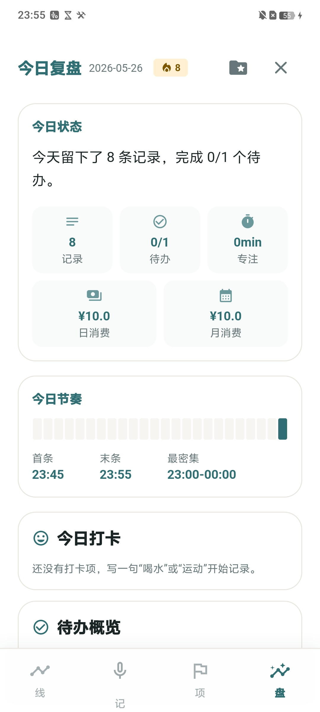
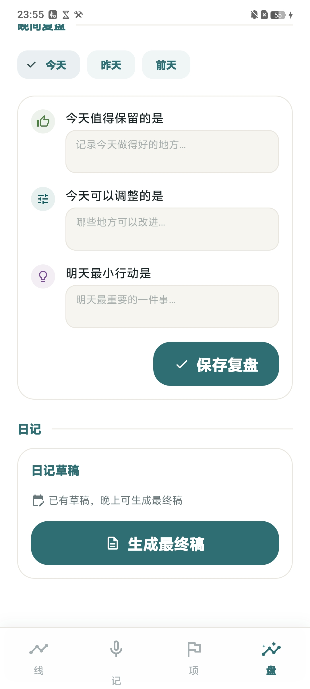
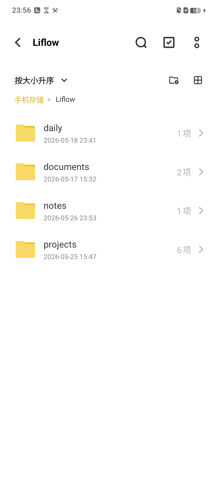

local-first life record
Liflow
把每天突然出现的一句话、一段语音、一张图片和一个待办，变成可回看、可整理、可带走的
个人数据库。


01 先放下
记录不用先整理。
打开“记”页，中心就是输入入口。说一段话，打一行字，先把脑子里的片段放下来。
旁白节奏：“Liflow 的第一步，是让记录足够轻。灵感、待办、语音片段，都可以先快速放进来，不用一开始就整理得很完美。”

02 看见顺序
碎片变成一天。
“线”页把备忘、情绪、消费、图片、语音、长文和待办放回时间里。回看时看到的不是列表，而是一整天的发生顺序。
旁白节奏：“记录完成后，它会进入时间线。你回看的时候，不只是看到几条数据，而是看到这一天是怎么发生的。”

03 长期沉淀
项目从日常里长出来。
长期目标不需要另开一套复杂系统。归入项目后，待办、更新和推进热力图会自然积累。
旁白节奏：“某些记录属于长期目标，比如学习、工作、创作或一个个人计划，就可以进入项页。日常的一句话，也能慢慢沉淀成进展记录。”


04 晚上收束
一天需要一个结尾。
“盘”页把今天的记录、待办、消费和节奏聚合起来。最后用三句话复盘，生成一篇能留下来的日记。
旁白节奏：“到晚上，Liflow 会把一天收束到盘页。你可以写三句复盘：今天值得保留的是什么，可以调整的是什么，明天最小行动是什么。”


05 文件在你手里
信任感不是口号。
内容会落到手机本地的 Liflow 文件夹里。daily、documents、notes、projects 都能被看见，也就能被带走。
Liflow 不是再多一个打卡工具，而是把每天真正发生过的事情，变成一个可回看、可整理、可带走的个人数据库。
